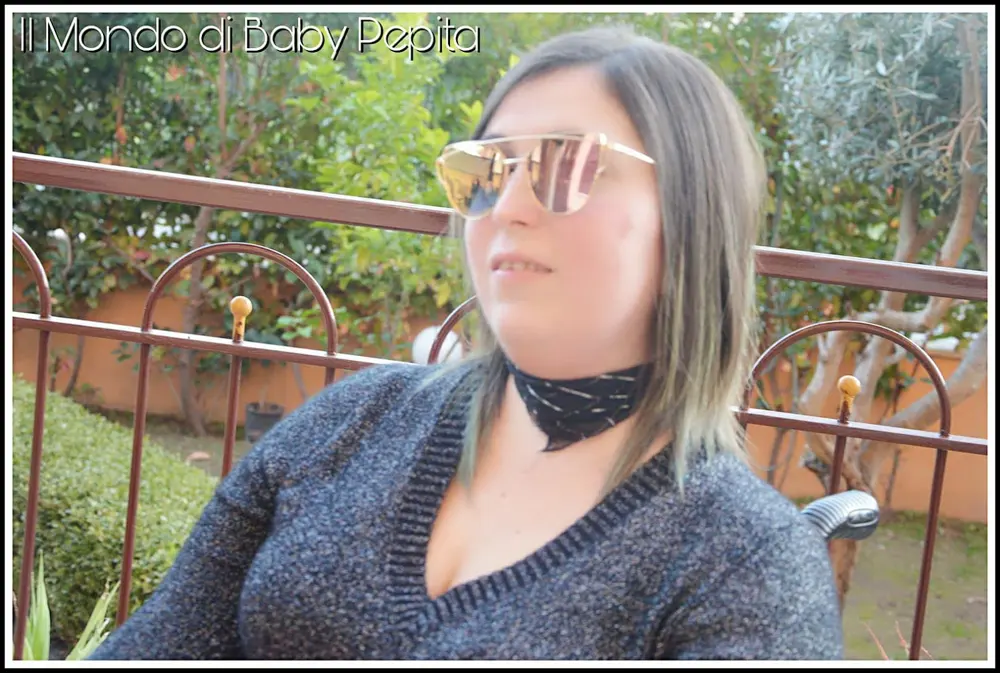
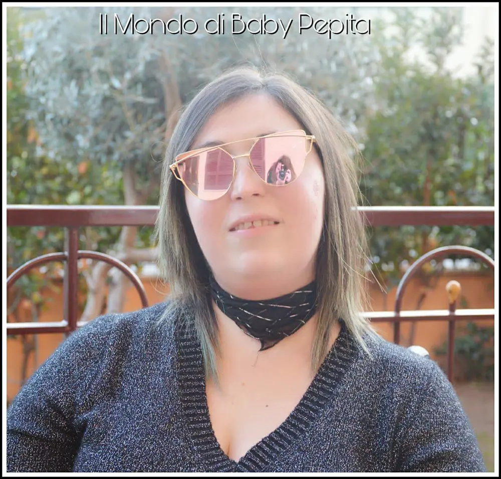

OCCHIALI DA SOLE FEISEDY
Riprendiamo questo nuovo anno con nuove cose da dire, nuovi articoli da presentarvi e nuove idee regalo per se stessi e per gli altri.
Oggi infatti, voglio farvi vedere un paio di occhiali da sole super fashion che, quest'anno stanno spopolando tutti i profili influenzer di instagram e non solo.
Ve li mostro direttamente indossati così da ammirare la bellezza alla luce del sole.
Occhiali da sole donna, disponibili in diverse colorazioni ma a me hanno colpito questo colore pink/Gold.
Arrivano in una scatola firmata FEISEDY, aprendo la confezione troveremo il sacchetto con gli occhiali con la carta intorno ai vetri, per evitare che arrivino graffiati.
Nel pacchetto troveremo anche un mini cacciavite con una punta a stella ed una piatta per ogni necessità.
Contiene anche un nasello di ricambio, oltre ovviamente al panno in microfibra per pulire gli occhiali.
Questa lente a specchio fa sì che gli occhiali da sole si presentano davvero belli ed eleganti e soprattutto alla moda.

Con un prezzo modico è possibile acquistare occhiali da sole all'ultima moda.
Sono leggeri, davvero non li sento sul naso e in più, cosa più importante, proteggono dai raggi UV.
Le lenti hanno questa particolarità di essere rosa alla base ma con riflessi dorati, a seconda della luce del sole.
La montatura invece, è tutta dorata.

La forma degli occhiali a FARFALLA rende queste lenti adatte ad ogni tipo di outfit e soprattutto adatto ad ogni occasione che sia giornaliero o serale.
Insomma, è un prodotto per me valido e bello. Sono rimasta davvero soddisfatta e di sicuro il prezzo è più che conveniente.
Prezzo: 14,70€
Io vi consiglio di acquistare almeno un paio di questi occhiali.
Scegliete tra le tante varietà di colori e sono sicura che anche voi ne rimarrete incantati.
Per acquistarli CLICCA QUI.